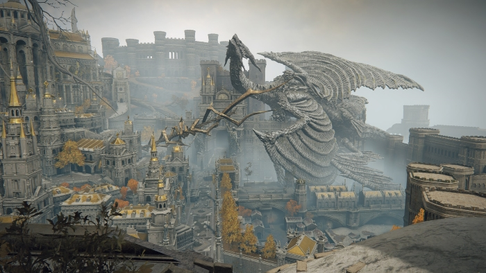
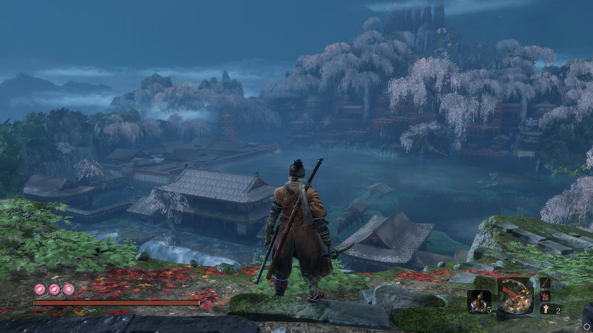
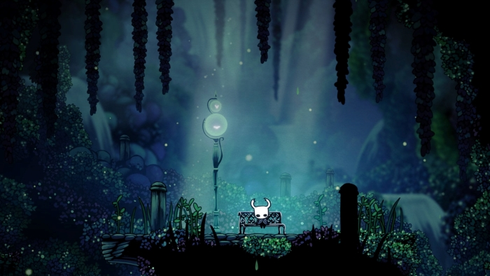

Souls games.
ik ben voor het eerst met dit soort spellen in aanraking gekomen toen Elden Ring uitkwam. het klikte eigenlijk meteeen en sindsdien ben ik veel meer van dit soort spellen gaan spelen. In het kort zijn soulsgames qua moeilijkheid veel moeilijker dan de gemiddelde game.Vaak zijn dezelfde elementen terug te vinden in elke souls game. Vier blokjes met een healing item, twee item slots, en een spel slot boven ergens aan de onderkant. en dan je healthbar enzo aan de bovenkant. het Bekenste aan souls games is vaak de bosses en het leveldesign
Elden Ring
Zoals ik net zei, is Elden Ring mijn eerste souls game. Door de hype op het internet besloot ik om het te proberen. De fantastische soundtrack gecombineerd met de echt heel mooie graphics hadden me al snel geboeid gemaakt in het spel. Elke area ziet er anders uit. je gaat van een groen bos naar een soort van magische swamp, en dan ben je opeens in een hell-ish area, en dan opeens weer ondergronds. De game geeft je geen volgorde in waar je eerst naartoe moet gaan, wat ik persoonlijk heel leuk vond.
De boss designs in deze game vind ik ook heel goed gelukt.Ik vind dit denk ik de coolste boss designs hebben die ze tot nu toe hebben gemaakt. een voorbeeld is bijvoorbeeld Rykard of Astel. de een is een heel grote slang met een hoofd en de ander is gewoon een raar vliegend ding. Heel weinig bosses zien er saai uit.
Een ander sterk punt vind ik de hoeveelheid wapens. Het is best wel overwhelming aan het begin om te kiezen met welk wapen je wilt spelen. want als je een beetje begint je stats op een bepaalde manier te verdelen heb je al zo veel wapens verzameld om uit te kiezen. Heel veel wapens hebben ook speciale moves, die echt super goed zijn geanimeerd. Over het algemeen heb ik hier gewoon heel veel van genoten.
Sekiro.
Met sekiro ben ik gestart in de zomer. De visuals zijn weer echt extreem goed, maar het combat systeem is hier wat echt het beste is. Ik heb veel gelezen dat dit ook wel beschouwt word als een Rythm game, en opzich ben ik het daar wel mee eens. het blocken van enemy attacks is best wel rythmisch, maar dat maakt het echt heel leuk! Ik hou het meest van de bossfights die bijna puur swordfights waren. zoals de final boss maar owl (father) was wel mn favoriete.Ik zat hier het langst aan vast, en toen ik hem eindelijk versloeg was ik echt heel blij. hij had naast snelle swordfight moves ook speciale moves. Een voorbeeld is bijvoorbeeld dat hij een vlammende uil naar je stuurt, die je dan kan ontwijken door schuin naar voren te springen. zulke moves vind ik heel cool.
Het plot in deze game vind ik ook erg goed en sommige van de endings waren oprecht best wel emotioneel. Ik denk dat dit mn favoriete game is van de makers.
Hollow knight
Eigenlijk is dit meer een Metroidvania maar omdat ik daar niet heel veel spellen van heb gespeeld zet ik hem bij de souls games. De Exploration in deze game is het hoogtepunt met heel veel unieke en mooie areas. De game werkt zo dat je steeds nieuwe abbilities unlocked, zoals double jumps, of wall jumps, waardoor steeds meer nieuwe ingangen naar areas openen. Dit zorgt ervoor dat de exploration heel leuk blijft.
De combat in deze game vind ik ook goed. het begint heel simpel, maar sommige bosses aan het einde van de game zijn oprecht heel lastig. De muziek vind ik ook erg goed. Elke area heeft mooie muziek. Ik heb het gevoel dat de persoon die de muziek heeft gemaakt heel erg geinfluenced is door klassieke muziek. ik heb van dit spel een piano boek gekocht waardoor ik een paar stukken uit dit spel op de piano kan spelen. Ik zit dus heel erg te wachten op het tweede deel dat eraan zit te komen.
